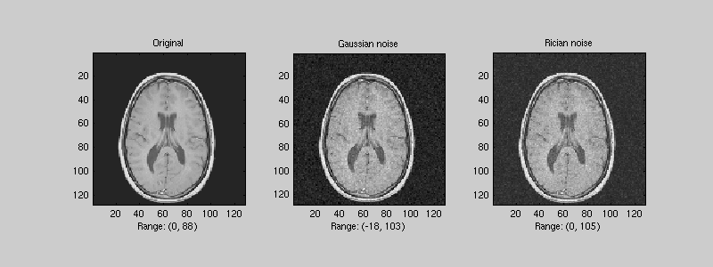
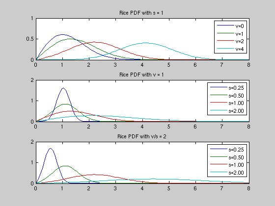
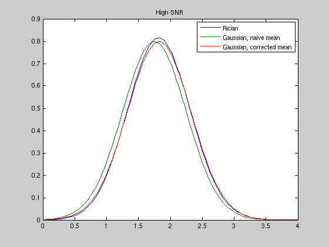
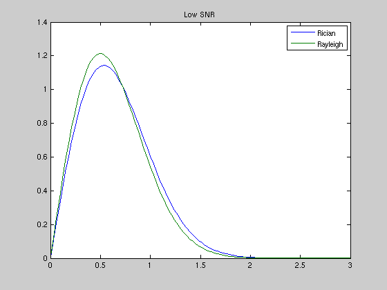
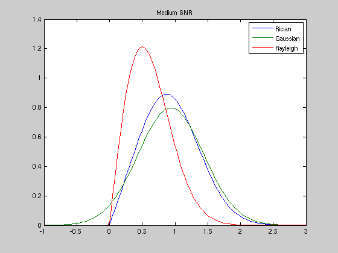
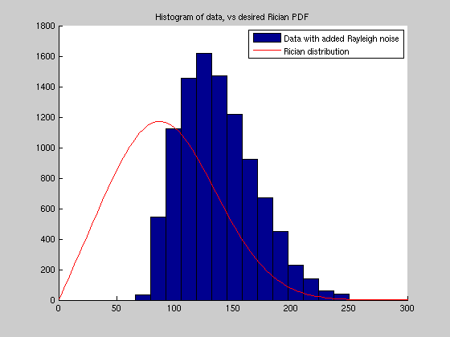
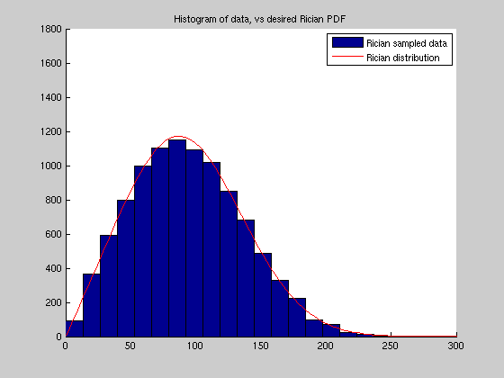
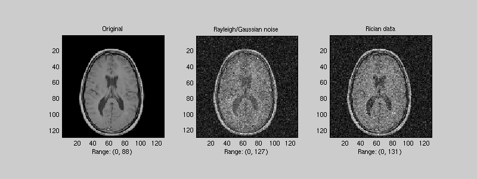

Rice/Rician Distribution Demo
Demonstrate ricernd, ricepdf, and ricestat, in the context of simulating Rician distributed noise for Magnetic Resonance Imaging magnitude data.
Contents
Example: Rician noise vs (additive) Gaussian noise
"Rician noise" depends on the data itself, it is not additive, so to "add" Rician noise to data, what we really mean is make the data Rician distributed.
clear, close('all'), clc data = load('mri'); % MRI dataset (magnitude image) distributed with MATLAB im = double(data.D(:,:,1,16)); % (particular slice through the brain) s=5; % noise level (NB actual Rician stdev depends on signal, see ricestat) im_g = im + 5 * randn(size(im)); % *Add* Gaussian noise im_r = ricernd(im, s); % "Add" Rician noise (make Rician distributed) % Compute ranges min_o = round(min(im(:))); max_o = round(max(im(:))); min_g = round(min(im_g(:))); max_g = round(max(im_g(:))); min_r = round(min(im_r(:))); max_r = round(max(im_r(:))); % Show each image with the same color scaling limits clim = [min_g max(max_g, max_r)]; figure('Position', [30 500 800 300]); colormap(data.map); subplot(1,3,1); imagesc(im, clim); axis image; title('Original'); xlabel(['Range: (' num2str(min_o) ', ' num2str(max_o) ')']) subplot(1,3,2); imagesc(im_g, clim); axis image; title('Gaussian noise'); xlabel(['Range: (' num2str(min_g) ', ' num2str(max_g) ')']) subplot(1,3,3); imagesc(im_r, clim); axis image; title('Rician noise') xlabel(['Range: (' num2str(min_r) ', ' num2str(max_r) ')'])
Note that the Gaussian noise has made some data go negative.
The Rician PDF
x = linspace(0, 8, 100); close; subplot(3, 1, 1) plot(x, ricepdf(x, 0, 1), x, ricepdf(x, 1, 1),... x, ricepdf(x, 2, 1), x, ricepdf(x, 4, 1)) title('Rice PDF with s = 1') legend('v=0', 'v=1', 'v=2', 'v=4') subplot(3,1,2) plot(x, ricepdf(x, 1, 0.25), x, ricepdf(x, 1, 0.50),... x, ricepdf(x, 1, 1.00), x, ricepdf(x, 1, 2.00)) title('Rice PDF with v = 1') legend('s=0.25', 's=0.50', 's=1.00', 's=2.00') subplot(3,1,3) plot(x, ricepdf(x, 0.5, 0.25), x, ricepdf(x, 1, 0.50),... x, ricepdf(x, 2.0, 1.00), x, ricepdf(x, 4, 2.00)) title('Rice PDF with v/s = 2') legend('s=0.25', 's=0.50', 's=1.00', 's=2.00')
Approximations to the Rician PDF
At high SNR (e.g. v/s > 3), Rician data is approximately Gaussian, though note that v is not the mean of the Rician distribution, nor of the Gaussian approximation (though for very high SNR it tends towards it).
v = 1.75; s = 0.5; x = linspace(0, 4, 100); mu1 = v; gpdf1 = (2*pi*s^2)^(-0.5) * exp(-0.5*(x-mu1).^2/s^2); mu2 = ricestat(v, s); % (mu2 is approximately sqrt(v^2 + s^2)) gpdf2 = (2*pi*s^2)^(-0.5) * exp(-0.5*(x-mu2).^2/s^2); close; plot(x, ricepdf(x, v, s), x, gpdf1, x, gpdf2); title('High SNR'); legend('Rician', 'Gaussian, naive mean', 'Gaussian, corrected mean')
At very low SNR, Rician data is approximately Rayleigh distributed (with no signal, the distributions are exactly equivalent)
v = 0.25; s = 0.5; x = linspace(0, 3, 100); raypdf = (x / s^2) .* exp(-x.^2 / (2*s^2)); close; plot(x, ricepdf(x, v, s), x, raypdf); title('Low SNR'); legend('Rician', 'Rayleigh')
At low-medium SNR, neither Gaussian nor Rayleigh is a great approximation
v = 0.75; s = 0.5; x = linspace(-1, 3, 100); mu = ricestat(v, s); gpdf = (2*pi*s^2)^(-0.5) * exp(-0.5*(x-mu).^2/s^2); raypdf = (x / s^2) .* exp(-x.^2 / (2*s^2)); raypdf(x <= 0) = 0; close; plot(x, ricepdf(x, v, s), x, gpdf, x, raypdf); title('Medium SNR'); legend('Rician', 'Gaussian', 'Rayleigh')
A pitfal: Adding approximate Rician noise
Since the Rician distribution with zero signal is equivalent to the Rayleigh, and with high SNR is approximated by a Gaussian, it is tempting to add Rayleigh or Gaussian noise (depending on SNR) to existing data, to simulate Rician distributed data (aka "adding Rician noise").
v = 75; s = 50; % medium SNR => Add Rayleigh noise % Generate Rayleigh samples N = 10000; gsamp = s * randn(2, N); rsamp = sqrt(sum(gsamp .^ 2));
Compare data with added Rayleigh samples to expected Rician distribution
r = v + rsamp; % Add Rayleigh noise to (constant) signal c = linspace(0, 250, 20); w = c(2); % histogram bin-width h = histc(r, c); close; hold on; bar(c, h, 'histc'); xl = xlim; x = linspace(xl(1), xl(2), 100); yl = ylim; % (for second plot) plot(x, N*w*ricepdf(x, v, s), 'r'); title('Histogram of data, vs desired Rician PDF') legend('Data with added Rayleigh noise', 'Rician distribution')
Compare Rician samples to expected Rician distribution
r = ricernd(v*ones(1, N), s); c = linspace(0, 250, 20); w = c(2); % histogram bin-width h = histc(r, c); close; hold on; bar(c, h, 'histc'); xl = xlim; x = linspace(xl(1), xl(2), 100); ylim(yl); plot(x, N*w*ricepdf(x, v, s), 'r'); title('Histogram of data, vs desired Rician PDF') legend('Rician sampled data', 'Rician distribution')
We see that the additive Rayleigh result is very poor (with medium SNR).
With high noise levels the appearance of results can differ dramatically:
s = 0.15 * max_o; % Approximate additive Rayleigh/Gaussian noise: im_r = im; for i=1:numel(im_r) if im_r(i) <= 3*s im_r(i) = im_r(i) + s*norm(randn(2,1)); % Add Rayleigh noise else im_r(i) = im_r(i) + s*randn; % Add Gaussian noise end end % "Add" Rician noise (make Rician distributed): im_R = ricernd(im, s); % Show each image with the same color scaling limits min_r = round(min(im_r(:))); max_r = round(max(im_r(:))); min_R = round(min(im_R(:))); max_R = round(max(im_R(:))); clim = [min_r max(max_r, max_R)]; close; figure('Position', [30 500 800 300]); colormap(data.map); subplot(1,3,1); imagesc(im, clim); axis image; title('Original'); xlabel(['Range: (' num2str(min_o) ', ' num2str(max_o) ')']) subplot(1,3,2); imagesc(im_r, clim); axis image; title('Rayleigh/Gaussian noise') xlabel(['Range: (' num2str(min_r) ', ' num2str(max_r) ')']) subplot(1,3,3); imagesc(im_R, clim); axis image; title('Rician data'); xlabel(['Range: (' num2str(min_R) ', ' num2str(max_R) ')'])
Copyright 2008 Ged Ridgway (Ged at cantab dot net)